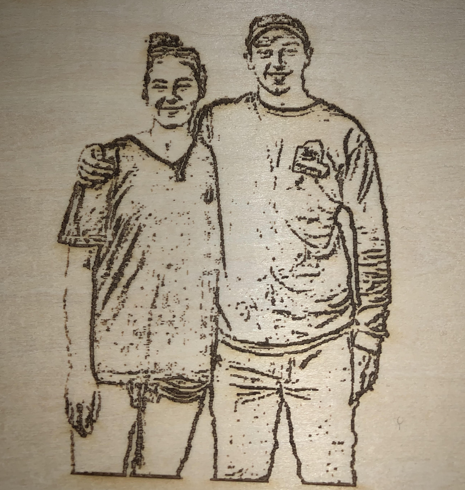
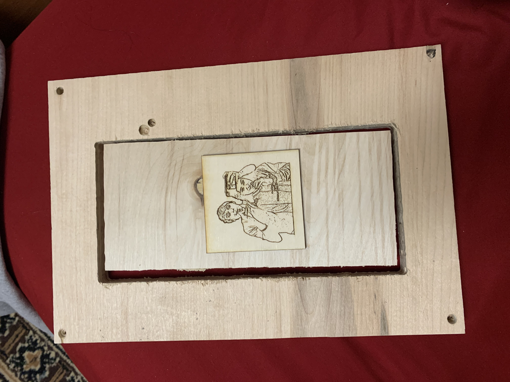
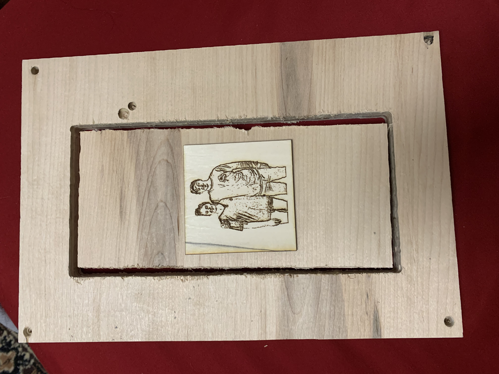

One more project to go! Tis project is a lot different compared to our other projects, becuase this time the whole design and project desription is up to us.
My ideas on the project: For this project, like most of my projects this year, I wanted to build something that I could give away as a christmas gift. I knew I was givng the acrlic Light Picture to my brother and the idea of a photo was in my mind when I decieded to try and make a cool wood burned picture and picture frame. The orginal Idea was pretty bland, but it started to get excited when I thought of the idea of making it spin. For materials I'm going to be using the same piece of wood that I used for the desk orginizer, and cutting a smaller rectangle inside of it. From there I can add some bearing and some pegs drilled into the top and bottom of the frame to make the smaller rectangle into the actual picutre that can spin showing both sides. As for tools I plan on using I intend on using the shaper to create the frame itself and do some design work, I plan on using the laser cutter to cut design elements and the picture into the wood. For stability I will also use the 3D printer to cut a small footprint holder to keep the stand up. To make it extra pretty I'm going to stain the wood. 
My first prototype for a print came out okay! I might thicken up some of the lines but im not sure yet
Prototype 2: Weeding out the IssuesMy plan for this prototype was essentially just to make sure that my idea would work, and refresh my skills on the shaper and laser cutter. To start, I took a piece of wood that was going to be the same size as my final cut, and meausured out a rectangle for my Picture Area. Placed the rectangle using the automatic Rectangle Tool on the Shaper, and started to cut it out. After three passes at .25 inches I had my picture and frame seperated, and my first issue. The area I had planned to use was way to long for a photo to be printed on without stretching it, the base is way thicker then I wanted. I'll have to resize and shape my picture surface into a square next time. The next step was lazer printing the photos onto the wood which is where I faced another big problem. The laser head only had 0.5 inches of clearence, and the wood was .75 inches thick. Next time I'll have to shape the wood down, but for now I took a piece of scrap wood and put my images on that, and glued it into the wood.
 